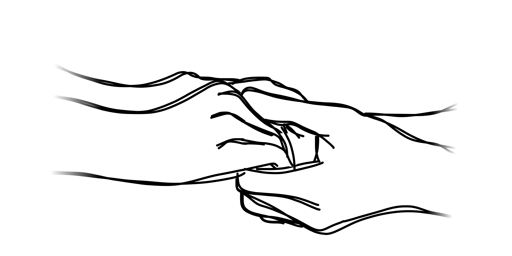

About
The problem
For many years, women have been underrepresented at the highest levels of math contests. There hasn't been a female USA IMO team member since 2007. There hasn't been a female USAMO winner for years, and in over 30 years of Mathcounts, there hasn’t ever been a single female Mathcounts champion. If you pick 30 people at random, the chance that none of them are female is less than one in a billion. And on and on and on …
What are some problems that face girls? There are many, but Athemath is most concerned with the lack of a female math community. While math itself is typically a solitary activity, for many competitors there's an intrinsic social aspect of math. We depend on our friends for advice on what to study, for motivation to work harder, and for support after failures. Math success doesn't happen in a vacuum.
But girls miss out on this.
Most of the time, we're the only girl on our math teams. The only girl on the math club. We room alone at all the contests, because there’s no other girls on the team to share a dorm with. And being a girl just makes it that much harder to be part of the all-male math team that’s been together for years, especially at an age that a lot of people struggle socially. Moreover, because there’s so few of us, we’re bombarded with unwanted attention and rude comments. We don't feel like we fit in, or that we belong with the math community, or that there's anyone to ask for help or support, and so we start dropping out.
Read more about our philosophy and our virtual program here.
Who we are
We are a 501(c)(3) non-profit incorporated in August of 2020. Our founder, Ali Cy, represented the US at the 2020 US European Girls’ Math Olympiad. Athemath began in conversations at EGMO about the pervasive lack of girls at higher levels of math contests and the specific problems that women in contest math faced.
We ran our first session from March 2021 to May 2021. In the 2021-2022 school year, we ran our program twice: once in the fall, and once in the spring. To date, over fifty non-binary and female students from around the world have congregated virtually in our virtual program for twelve weeks of class, community-building events, office hours, and casual voice chats. Read about what it's been like here.
Our staff is now several people strong, and the vast majority of us are math contest enthusiasts united by a desire to help girls reach their full mathematical potential. Read more about our staff here.